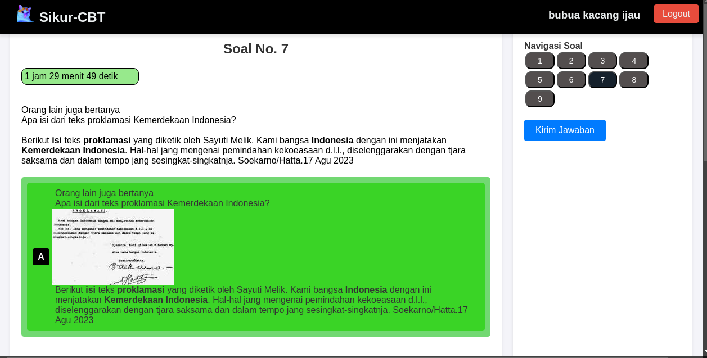

SIKUR CBT

Sepatah kata
Alhamdulillah setelah perjuangan begitu lama dengan berkutat seputar kode
javascript yang sama-sama memphp dengan php (wkwkwkwwkwk) akhirnya telah hadir
aplikasi web ujian berbasis komputer dengan nama Sikur-cbt
*sikur nama kucing.
Tampilan dashboard operator

Sekilas
Aplikasi ini di pada client side dibangun dengan react js dan pada bagian
server side menggunakan node js yang keduanya sangat sesuai untuk web yang
bekerja secara real-time.

Tampilan laman ujian siswa.

Pengembangan
Saat ini Sikur cbt masih dalam tahap pengembangan
jika terdapat sedikit bug harap dimaklumi